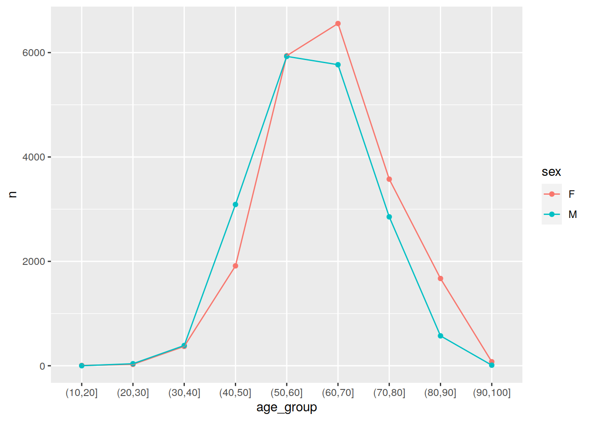

Last updated: 2020-06-07
Checks: 6 1
Knit directory: tutorials_workflowr/
This reproducible R Markdown analysis was created with workflowr (version 1.6.2). The Checks tab describes the reproducibility checks that were applied when the results were created. The Past versions tab lists the development history.
Great! Since the R Markdown file has been committed to the Git repository, you know the exact version of the code that produced these results.
Great job! The global environment was empty. Objects defined in the global environment can affect the analysis in your R Markdown file in unknown ways. For reproduciblity it’s best to always run the code in an empty environment.
The command set.seed(20190513) was run prior to running the code in the R Markdown file. Setting a seed ensures that any results that rely on randomness, e.g. subsampling or permutations, are reproducible.
Nice! There were no cached chunks for this analysis, so you can be confident that you successfully produced the results during this run.
Great job! Using relative paths to the files within your workflowr project makes it easier to run your code on other machines.
Great! You are using Git for version control. Tracking code development and connecting the code version to the results is critical for reproducibility.
The results in this page were generated with repository version b6e1e99. See the Past versions tab to see a history of the changes made to the R Markdown and HTML files.
Note that you need to be careful to ensure that all relevant files for the analysis have been committed to Git prior to generating the results (you can use wflow_publish or wflow_git_commit). workflowr only checks the R Markdown file, but you know if there are other scripts or data files that it depends on. Below is the status of the Git repository when the results were generated:
Ignored files:
Ignored: code/analysis/
Note that any generated files, e.g. HTML, png, CSS, etc., are not included in this status report because it is ok for generated content to have uncommitted changes.
These are the previous versions of the repository in which changes were made to the R Markdown (analysis/2020_natalie_supply_date.Rmd) and HTML (docs/2020_natalie_supply_date.html) files. If you’ve configured a remote Git repository (see ?wflow_git_remote), click on the hyperlinks in the table below to view the files as they were in that past version.
| File | Version | Author | Date | Message |
|---|---|---|---|---|
| Rmd | b6e1e99 | Dennis Wollersheim | 2020-06-07 | workflowr::wflow_publish(“analysis/2020_natalie_supply_date.Rmd”) |
Hi Natalie
What a good question! I have run into this problem myself, in this same dataset. There are 2 problems: definition, and implementation.
The definition problem is that if a person was born in 1950 and they get a drug in 1999, they were 49 years old. If they also get a drug in 2001, they are then 51 years old. These two prescriptions are the same person, but if we group by age, they will be counted twice. What should we do? What age group should they go into? The 40-50 year olds, the 50-60 year olds, or both?
It seems wrong to count a person twice, despite their various ages. For lack of anything better, I suggest that we classify a person based on when they first got the drug. In SQL, this query would look like:
Let’s say the drug is ATORVASTATIN, pbs_item 08214H.
suppressMessages( library(tidyverse))
query <- "
SELECT pin, yob, sex, supply_date
FROM patient JOIN pbs USING (pin)
WHERE pbs_item = '08214H'
"
library("RPostgreSQL")
con <- dbConnect(dbDriver("PostgreSQL"),
dbname = 'pbs_sample',
host = "himsql7.latrobe.edu.au", port = 5432,
user = "dewollershei-test", password = "healthGuru")
prescriptions <- dbGetQuery( con, query ) %>% as.tibble()
prescriptions# A tibble: 38,788 x 4
pin yob sex supply_date
<chr> <int> <chr> <date>
1 06899756225 1953 F 2011-03-25
2 03539542487 1953 M 2011-03-10
3 08777031685 1938 M 2011-11-25
4 03695085043 1969 M 2011-08-13
5 01673827540 1944 M 2011-01-19
6 07044991056 1947 M 2011-04-07
7 09496808571 1939 M 2011-11-19
8 02349907145 1948 F 2011-06-09
9 06650470328 1958 F 2011-07-24
10 03695085043 1969 M 2011-07-20
# … with 38,778 more rows#
dbDisconnect( con )[1] TRUEThen, in R, with the help of the lubridate library to extract the supply year from supply_date it would look like:
library( lubridate )
Attaching package: 'lubridate'The following objects are masked from 'package:dplyr':
intersect, setdiff, unionThe following objects are masked from 'package:base':
date, intersect, setdiff, unionperson_age_at_first_drug <-
prescriptions %>%
group_by( pin, yob ) %>%
summarise( min_year = min( year( supply_date ))) %>%
mutate( age_at_first_drug = min_year - yob) %>%
mutate( age_group = cut( age_at_first_drug, breaks=0:11*10 ))
person_age_at_first_drug# A tibble: 1,227 x 5
# Groups: pin [1,227]
pin yob min_year age_at_first_drug age_group
<chr> <int> <dbl> <dbl> <fct>
1 00000072038 1960 2008 48 (40,50]
2 00005888880 1932 2003 71 (70,80]
3 00021586775 1949 2006 57 (50,60]
4 00026334260 1952 2005 53 (50,60]
5 00037697753 1953 2012 59 (50,60]
6 00059280489 1960 2012 52 (50,60]
7 00060351262 1945 2006 61 (60,70]
8 00077731912 1951 2005 54 (50,60]
9 00077839018 1994 2011 17 (10,20]
10 00092760238 1973 2010 37 (30,40]
# … with 1,217 more rowsOnce we have the person’s age when they first got the drug, we can join this data in when we need it. For example, if we want to look at the gender, and total number of prescriptions , we could use the same dataset, but inner_join the person_age_at_first_drug tibble, to find out the age group.
For example
prescriptions %>%
inner_join( person_age_at_first_drug, by='pin' ) %>%
count( age_group, sex ) %>%
ggplot( mapping = aes( x=age_group, y=n, color=sex, group=sex )) +
geom_point() +
geom_line()
You also asked how to rename cut labels.
If you want to relabel the default cuts, you probably need to type them out:
my_labels = c("0-9", "10-19", "20-29", "30-39", "40-49", "50-59", "60-69", "70-79", "80-89", "90-99", "100-109")
person_age_at_first_drug %>%
mutate( age_group = cut( age_at_first_drug, breaks=0:11*10, labels=my_labels ))# A tibble: 1,227 x 5
# Groups: pin [1,227]
pin yob min_year age_at_first_drug age_group
<chr> <int> <dbl> <dbl> <fct>
1 00000072038 1960 2008 48 40-49
2 00005888880 1932 2003 71 70-79
3 00021586775 1949 2006 57 50-59
4 00026334260 1952 2005 53 50-59
5 00037697753 1953 2012 59 50-59
6 00059280489 1960 2012 52 50-59
7 00060351262 1945 2006 61 60-69
8 00077731912 1951 2005 54 50-59
9 00077839018 1994 2011 17 10-19
10 00092760238 1973 2010 37 30-39
# … with 1,217 more rowsIf you aspire to be as lazy as me, see if you can figure out what the following two lines of code are doing…
a=0:10*10
paste(a,a+9, sep='-') [1] "0-9" "10-19" "20-29" "30-39" "40-49" "50-59" "60-69"
[8] "70-79" "80-89" "90-99" "100-109"